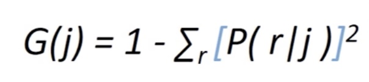
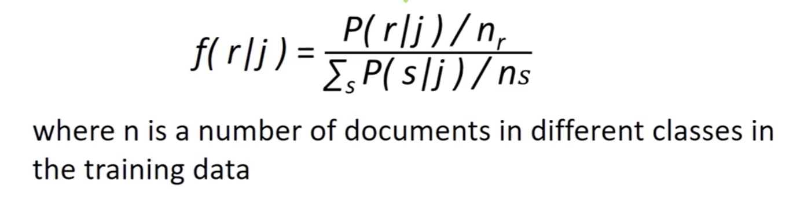
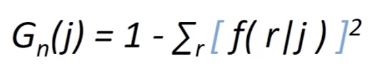

Text Classification
Simple sentiment analysis: review pos or neg?
will the customer churn in the next month according to his/her comment?
Major Steps:
- Feature Extraction
- Bag of words
- TF_IDF
- N grams
- Dimensionality reduction
- Model traning and evaluation
- naive Bayes, Tree, SVM, Logit and Deep Learning tools.
- Confusion matrix, Fscore and ROC, etc.
Feature Selection
Text data are heterogeneous sources, sparse(a lot of "0" values) and high-dimensional.
So it needs feature extraction compared to numerical data.
How to select features for text calssification?(Filter Method)
- Gini index
k categories, documents contain feature j: Sj
fraction of document in Sj that belong to category r: P(r|j)
We can get poorly discriminating feature j or perfectly discriminating feature j, with the probability equals to 1/k or 1.


In this way we can normalize to even distribution

Embeded filter method